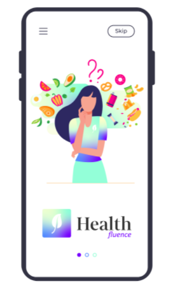

The Problem:
Users are influenced by their social circle’s eating habits, preventing them from reaching their health goals.
Our Roles:
UX researchers, UX designers
Timeline:
3 Weeks

Stressed and busy individuals are vulnerable to the influences of others eating habits and projected self-image. How might we create a platform that empowers stressed and busy individuals to counteract negative outside influences and help them make independent eating decisions and achieve better self-esteem?
1. As a researcher, I want to understand the users mental model and definition of health.
2. As a researcher, I want to understand the barriers, if any, a user faces when attempting to maintain their health.
Tries to eat well, exercise, and maintain good mental health
Tries to have a balanced diet


1: End-of-Day Check-in Log: Similar format to On-location Check-in (MVP testing enforced relevance and user willingness to do this action.)
2: Home Screen Widget Notification: In case users turn off GPS access and/or notification capability to app; users still given reminder to interact with app and complete an on-location or end-of-day log.